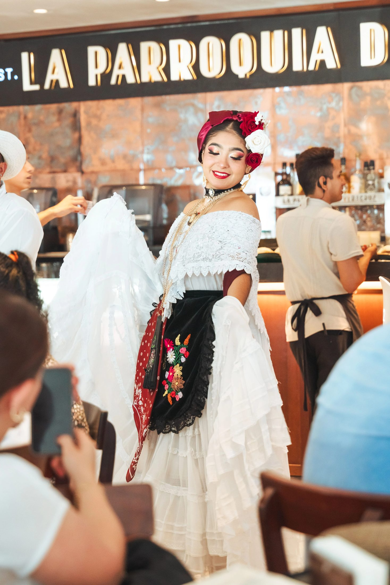
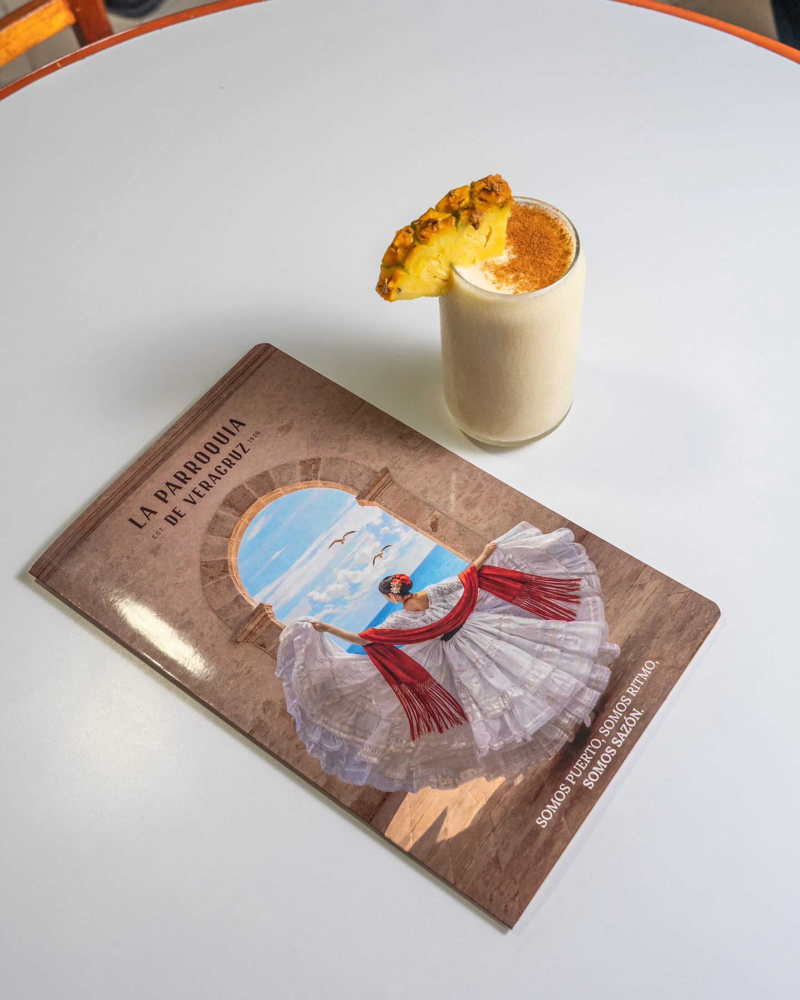
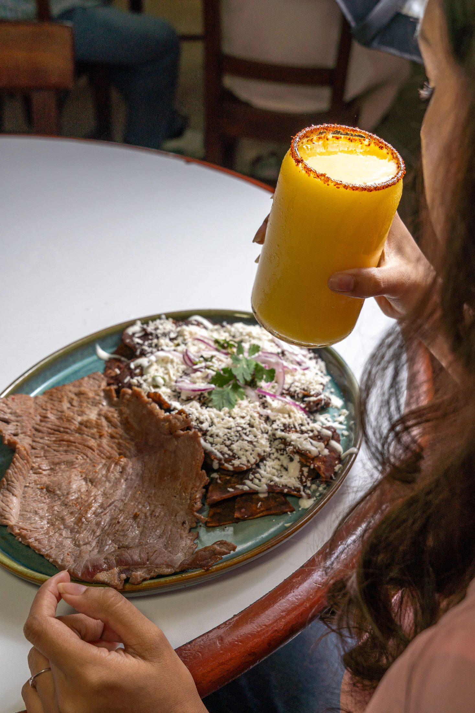
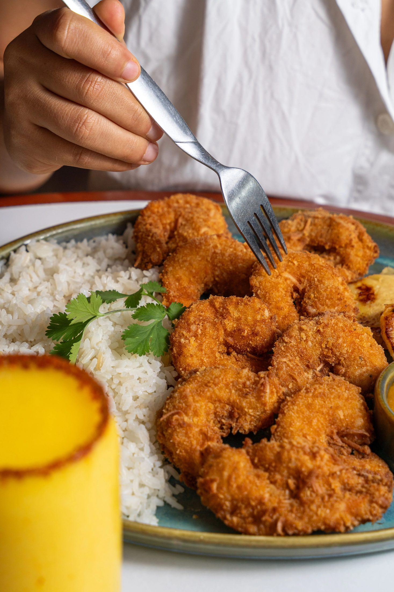

Casi 100 años de historia, traducidos a una marca integral.
- Redes Sociales
- Meta Ads
- Producción Audiovisual
- Cliente
- La Parroquia de Veracruz
- Industria
- Café y Gastronomía
- Disciplinas
- Redes Sociales, Meta Ads, Producción Audiovisual
- Alcance
- Nacional (origen en Veracruz)
La Parroquia de Veracruz es una marca veracruzana con casi 100 años de trayectoria, que evolucionó de una cafetería tradicional a una propuesta integral de café y gastronomía, con cafeterías, restaurantes y una línea propia de productos de café. Nos buscaron para traducir esa evolución de negocio a una comunicación a la altura: capaz de honrar la identidad veracruzana que hizo grande a la marca, sin limitarla. Desde febrero de 2026 gestionamos su comunicación digital de forma integral —contenido, producción audiovisual y campañas de Meta Ads— consolidando una presencia consistente en cada línea de negocio.

La Parroquia de Veracruz es una de las marcas de café y restaurantes más reconocidas de Veracruz, con presencia nacional a través de su línea de productos de café. Nos buscaron en un momento clave de transformación de negocio: necesitaban una agencia capaz de comprender a profundidad su origen, historia e identidad veracruzana, pero con la visión y la capacidad de ejecución para acompañar su crecimiento hacia nuevos formatos y líneas de negocio.
Comunicar únicamente una cafetería tradicional ya no era suficiente: la marca estaba ampliando su modelo de negocio hacia restaurantes y una línea propia de productos de café para consumo en casa. El reto de Continental Media era traducir esa transformación a una comunicación integral y consistente, sin perder los códigos y la identidad que hacen reconocible a La Parroquia desde hace casi un siglo — un equilibrio que exige tanto sensibilidad de marca como capacidad estratégica.
Tres decisiones clave
-
01
Tomar la historia, los códigos y los elementos reconocibles de La Parroquia de Veracruz como punto de partida, llevándolos a una comunicación actual sin que la tradición limitara la evolución de la marca.
-
02
Construir una comunicación capaz de presentar a La Parroquia como una marca integral, dando espacio propio a cada uno de sus modelos de negocio: restaurantes, cafeterías y productos de café para consumo en casa.
-
03
Convertir la historia, los rituales, los productos, las sucursales y la cultura alrededor de La Parroquia en fuentes constantes de contenido, en vez de reducir la comunicación a productos y promociones.

Contenido y producción
Desarrollamos y gestionamos de forma integral la comunicación digital de La Parroquia de Veracruz: planeación de contenidos, creación de piezas gráficas y audiovisuales, sesiones de foto y video, desarrollo de Reels, y comunicación de productos, promociones y sucursales — todo diseñado para reflejar la marca completa, no solo una parte de ella.


Presencia en cada sucursal y línea de negocio
Cada pieza de contenido se adaptó a las distintas líneas de negocio de la marca: cafeterías, restaurantes y la línea de productos de café, manteniendo una narrativa consistente entre canales y puntos de venta.
Campañas y coordinación continua
En paralelo, configuramos, gestionamos y optimizamos campañas publicitarias en Meta, adaptando cada contenido a las distintas líneas de negocio de la marca. El trabajo se ejecutó de forma continua y estrechamente coordinada con el equipo de La Parroquia, ajustando la estrategia conforme la marca fue consolidando su propuesta integral en el mercado.
Hoy, la comunicación de La Parroquia de Veracruz refleja lo que la marca realmente es: una propuesta integral de café y gastronomía, presente de forma consistente en cada línea de negocio y en cada punto de contacto digital. Restaurantes, cafeterías y productos de café dejaron de comunicarse como piezas sueltas para integrarse bajo una misma narrativa — la de una marca que honra casi un siglo de historia mientras sigue evolucionando.
Una misma narrativa
Restaurantes, cafeterías y productos de café, integrados en una sola marca